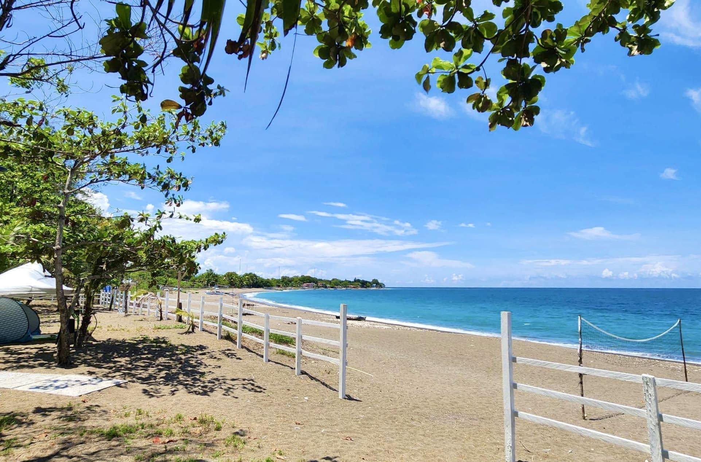
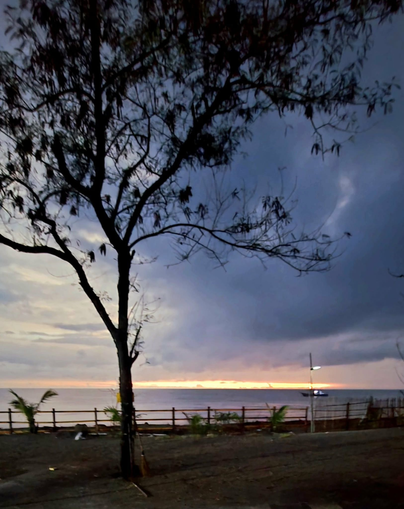

02 / PACK LIGHT. REMEMBER MORE.
Ready for
the coast?
Tick things off as you pack. Your list stays in this browser when storage is available.
0 packed
A personal checklist, not a list of items provided by the resort.

AMUNGAN, IBA, ZAMBALES — PHILIPPINES
A little more blue. A little less on your mind.
Make room for a slower kind of getaway.
A COAST TO COME BACK TO
Trees overhead.
The sea just beyond.
Time to enjoy both.
Costa del Mar Beach Resort is a coastal hideout in Amungan, Iba, Zambales. Its published moments are the simple ones: beach views, golden-hour skies, family time, and a cabin tucked among the trees.
Take a look around. Then ask the resort about the dates, arrangements, and current options that fit your kind of break.
Find your kind of coast ↘
A little light worth slowing down for.FROM THE COASTAL JOURNAL / IBALESS OF AN AGENDA. MORE OF A FEELING.
Start with the mood.
We’ll help you turn it into a clear inquiry.
FOR YOUR NEXT UNHURRIED DAY
Make a beach day your starting point. Share your preferred date and group size, then ask about day access, facilities, current rates and arrival arrangements.
THE COAST, IN SIX FRAMES
Actual photographs from the resort’s public page.
Explore a scene. Open it. Keep a little inspiration.
YOUR COASTAL FIELD GUIDE / PART ONE
Put your dates and ideas in one place.
Review your inquiry before you send it.
YOUR COASTAL FIELD GUIDE / PART TWO
A reusable packing list and a shared-cost planner.
A little less to keep in your head.
Tick things off as you pack. Your list stays in this browser when storage is available.
Use the resort’s quotation and your own travel estimates. We’ll do the sharing maths.
Planning arithmetic only. These are figures you enter, not advertised rates or a resort quotation. Final charges and inclusions come from Costa del Mar.
ONE LAST LITTLE CHECK
Check the latest forecast and contact the team before setting out. The resort has posted weather-related access updates before; conditions and arrangements can change.
01Always follow on-site guidance and beach flags. This website does not show live conditions or live availability.
A FEW NOTES BEFORE YOU GO
Send your dates, visit type, adult and child counts, and preferred arrangements. Ask Costa del Mar for current rates, exact inclusions and an itemized quotation. The calculator uses only figures you enter.
Yes. The resort’s public page shows an A-frame cabin exterior and describes a private hideout. Ask about current overnight options, occupancy, beds, facilities, check-in and check-out times. No room capacity or amenity package is assumed here.
The resort’s published cover photograph includes tents. Ask the team whether camping is currently offered, if you can bring your own tent, and what facilities, rules and charges apply. The camping checklist is personal planning guidance.
Include children’s ages, pet details and food plans in your inquiry. Ask about the current policies, facilities and any charges before making arrangements.
No. It prepares a message for you to review and send. Confirm availability, final rates, reservation requirements, payment instructions and cancellation or rescheduling terms directly with the resort.
Yes, the photographs were published on the resort’s public Facebook page. They show past resort moments, with different publication dates. View original sources in the photo viewer and confirm the latest property details with the team.